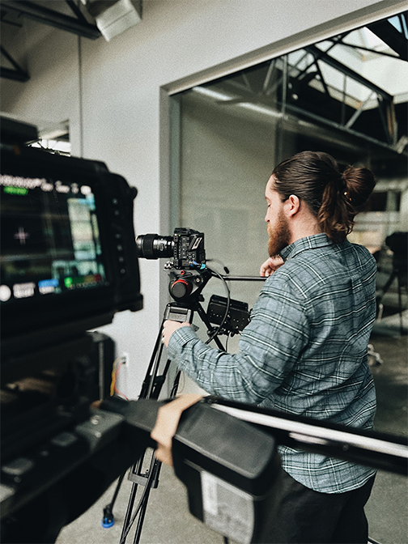

Social Media Videos
We recommend our clients use Tiktok, Reels, and YouTube Shorts to grow their online presence with organic and paid views. These videos are vertical and usually between 30-60 seconds in length. We offer multiple different types of vertical videos ranging in cost and complexity.
Livestreams
In 2022, livestreams are a great way to connect with your online community and invite guests from all around the world to your event. Our team makes sure that you’re presented in the best way by streaming in 4k from our cinema grade cameras and professional lenses. Not only do we give you a crystal clear image but crisp audio from wireless and handheld microphones.
Creative
Video production is a very expansive world ranging from multi-million dollar Hollywood movies to Kim Kardashians Instagram stories. Our team is very experienced in shooting cinematic shots, stunning interviews, and crisp audio. Bring us your ideas and we can create a custom invoice. Don’t know what you want to shoot but have a budget and want to start creating? Our team can help brainstorm and create a strategy custom to your brand.
